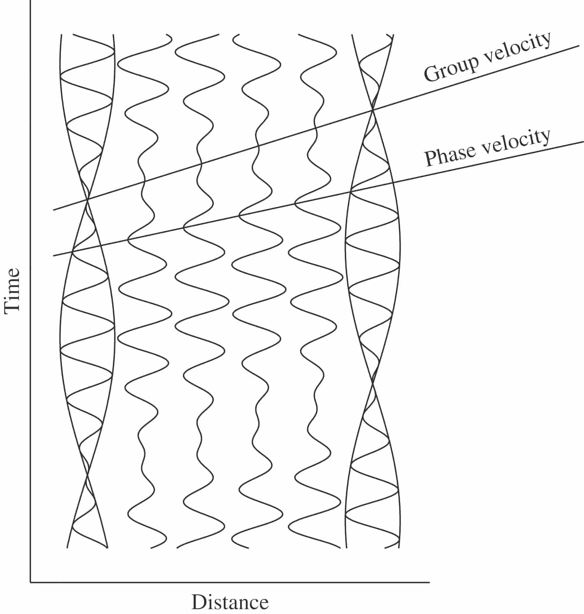
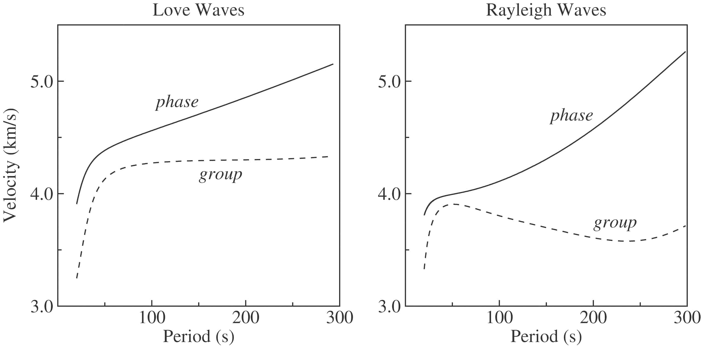
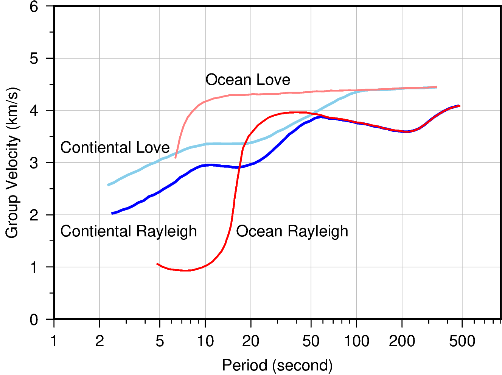

面波
Contents
面波#
本节贡献者：姚家园
最近更新日期：2022-08-19
面波频散#
不同频率的面波传播速度不同，即频散（dispersion）。面波的传播速度与频率的函数关系称为 频散曲线（dispersion curve）。面波有两种传播速度：
相速度（phase velocity）：波峰或波谷的传播速度，常用 \(c\) 表示
群速度（group velocity）：波包的传播速度，常用 \(U\) 表示
相速度和群速度的示意图
如下图所示，波峰的传播速度是相速度；波包的传播速度是群速度。
波包指台站记录到的振动的包络线，代表了波的能量。下图绘制了第一个台站和最后台站的波包， 需要注意的是下图的包络线只是为了形象化表示波包而刻意描绘出来的，台站处的介质实际运动还是振动曲线。
如下图所示，在波传播过程中，波峰的形状并不是固定的，而会在包络线的约束下改变。
{kind=link}

Fig. 2 相速度和群速度的示意图。修改自《[Introduction to Seismology]》（第三版）图 8.7。#
下图是全球一维模型 PREM 的理论面波频散曲线。对于地球而言，面波的相速度一般随着周期的增加 而增加，并且群速度一般比相速度小。
{kind=link}

Fig. 3 基阶 Love 波（左）和 Rayleigh 波（右）的理论频散曲线（来自 Preliminary Reference Earth Model (PREM)）。 修改自《[Introduction to Seismology]》（第三版）图 8.8。#
下图是大陆和大洋下传播面波的群速度频散曲线，横坐标采用了对数，这为了更好地显示短周期的频散。 可以看出大陆和大洋路径的面波群速度有以下区别：
大陆路径的面波频散比海洋路径弱，即频散曲线更平缓。 例如，大洋路径的 Rayleigh 波在 10-20 秒周期内，频散极强，群速度从 1 km/s 骤增至 3.5 km/s；而大陆路径的 Rayleigh 波在 3-50 秒周期内，群速度也只从 2 km/s 增加至 约 3.8 km/s。这主要是因为大洋地壳厚度比大陆地壳厚度小很多，前者约为 5-8 公里， 后者约为 25-50 公里，大陆高山区地壳还会更厚。
大陆路径的面波频散比海洋路径更持久，即群速度随周期而变化的周期区间更大。 例如，大洋路径的 Love 波在 10 秒周期后，群速度几乎保持不变，大约 4.5 km/s； 而大陆路径的 Love 波的频散一直持续到约 100 秒周期。
{kind=link}

Fig. 4 大陆和大洋的面波群速度。修改自《[An Introduction to the Theory of Seismology]》（第四版）图 11.1。#